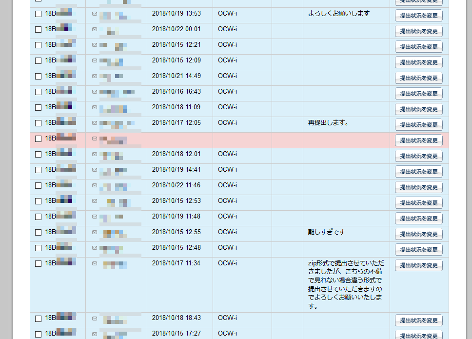

コンピュータサイエンス第二 (1b, 2b) 本授業について
2019年12月2日 (月)
本授業で習うこと
最終的な目標 …
コンピュータサイエンス的な「考え方」を学ぶこと。
- 【再帰】
- 再帰とは、プログラムを簡単にするための抽象的な
考え方のひとつである。本授業では演習を通して再帰を学習する。
- 【ソートアルゴリズム】
- ソートあるいは並べ替えをおこなう
プログラムを使って、再帰および計算量の理論の実例を学ぶ。
- 【計算量の理論】
- コンピュータは魔法ではないので、あらゆる
処理には一定の時間がかかる。ここではその感覚を学習する。
- 【図形処理】
- 図形をコンピュータで表現する
SVG形式について学び、
簡単なグラフィックスおよび図形処理のやり方を学習する。
- 【計算幾何学】
- ヴォロノイ図について学習する。ヴォロノイ図とは、
あらかじめ与えられた各「センター」に
もっとも近い点の集合を記した図である。
このような図を使ってジョン・スノウが1854年に行った、
コレラの集団感染源を推測するシミュレーションをおこなう。
- 【データ処理・機械学習の基礎】
- CSV (カンマ区切り) 形式のファイルを機械的に処理する方法を学び、
機械学習の入門と簡単な演習をおこなう。
必要な知識
コンピュータサイエンスは、練習さえすれば誰でもできるようになります。
逆に、説明を読むだけで実際に練習しないと、いつまでたっても理解できません。
楽しく学ぶためには
- パソコンの基本的な使い方 (ファイル操作、ターミナル) をマスターする。
- キーボードで記号・英数字を快適に入力できるようにする。
- 数学と同じく、CS は積み重ねの学問である。
わからない部分があった場合、わかる所まで戻って復習すること。
- (これまた数学と同じく) 練習が重要である。
教員はただ Python に慣れているだけで、別に頭が良いわけではありません。
難しい問題は先生にとっても難しい。
評価方法
基本的に、教員の目標はこうである:
- やる気があり、学習に時間をかけた学生 … 高得点を与える。
- やる気があるが、充分時間をかけられなかった学生 … 低得点を与える。
- 時間がかけなかったが、他人の答えを写して点を取ろうとした学生 … 悪い奴なので停学させる。
本授業では試験は行わず、以下の方法で評価する。
- 小課題 (5点×7回)
短いプログラムを書く。締め切りは1週間後。
- 中課題 (20点×3回)
やや長めのプログラムを書く。締め切りは2週間後。
- オプション課題 (5点×3回)
やる気のある人向け。締め切りは2週間後。
提出はすべて OCW-i 経由でおこなう。
締め切り日を過ぎたものは一切受けつけない。
ちなみに、授業の出席そのものは成績には考慮されない
(が、授業中に課題のヒントが与えられることは多い)。
101点以上の点数は100点に切り詰めるものとする。
不正行為に関する警告
課題で他人の答えを写す、試験中に別の答案を見るなどの不正行為をした場合、
その科目の点数は 0 点になる。また、単位の剥奪、停学 (最悪の場合) などがありうる。
- やり方について友達と相談するのはOK。
- 答えを直接教えたり、見たりするのはダメ。
- 見せたほうも同罪。
したがって、うっかり見せないよう注意すること (自分の安全のため)。
- 「ただの脅し文句で、実際に罰されたりはしないだろう」と思ったら大間違い。
過去にそういった例があります。
- 逆に課題と直接関係ない部分は、いくらでも聞いてOK。
むしろ、PCの使い方とかは積極的に友達や先生の技を盗むこと。
東京工業大学学生の懲戒等に関する規程 本則
第7条(定期試験等における不正行為)
学生が，定期試験等における不正行為のため懲戒処分を受けた場合は，不正行為のあったクォーター(学則第7条第2項及び大学院学則第9条第2項の規定に基づき各学期を前半と後半に分けた期間をいう。以下同じ。)に当該学生が履修した授業科目等の成績をすべて0点又は不合格とする。なお，授業科目等の履修期間が不正行為のあったクォーター以外のクォーターを含む場合も，同様とする。
中課題 (20点) の採点基準
- エラーを出さずに実行する … +5点。
- a. + 正しい結果を出力する … +5点。
- b. + コメントで動作説明が書かれている … +5点。
- c. + 解説がわかりやすい … +5点。
(注意: 「長ければよい」というものではない)
一般に「プログラムの動作をわかりやすく解説する」のは、
単に「正しいプログラムを書く」だけよりも難しい。
「動くけど説明しづらいプログラム」は沢山存在するからである。
本当に優れたプログラムは、そもそも説明しやすいように
最初から構成を考えて書かれている。
また、OCWi に提出する際のコメント欄は
ほとんど読まないので、あまり重要なことを書かないこと。
(読みとばす危険性がある)

Yusuke Shinyama